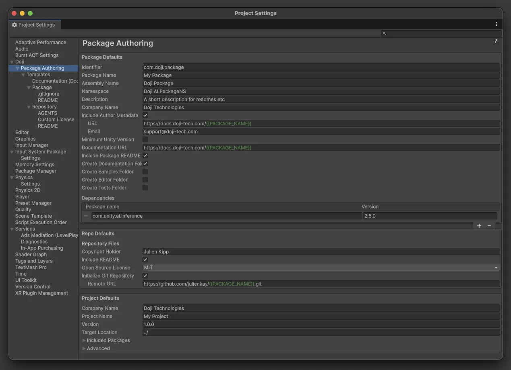
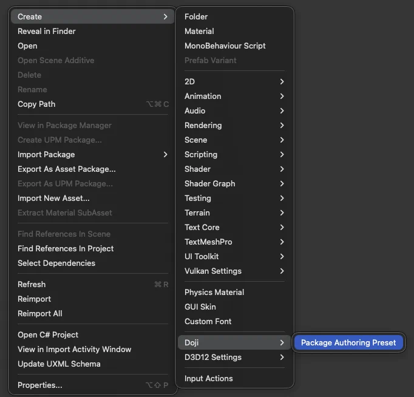
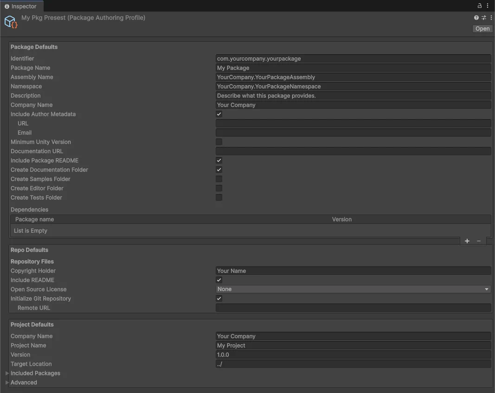
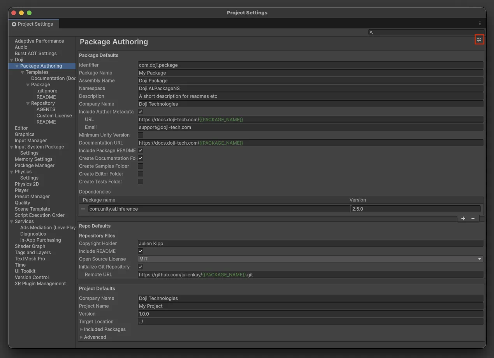
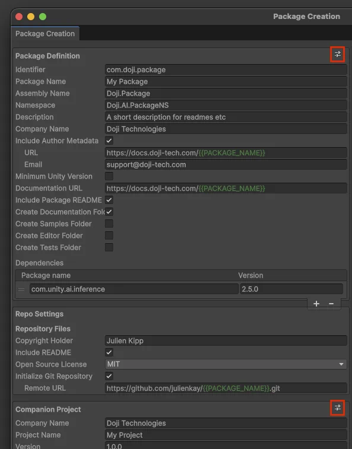

Defaults And Presets
The package-authoring tools separate persistent project defaults from reusable preset assets.
Project Defaults
Open Project Settings > Doji > Package Authoring to edit the project-wide defaults.

These defaults are stored in ProjectSettings/PackageAuthoringProjectSettings.asset and are used whenever a wizard opens without applying a preset first.
The page contains three blocks:
Package DefaultsRepo DefaultsProject Defaults
These sections mirror the models used by the package creation and project creation tools.
Why Project Defaults Matter
Project defaults feed:
- the initial state of the package creation wizard
- the initial state of the project creation wizard
- the fallback values used when you reset a wizard section back to project defaults
Changing project defaults does not retroactively update repositories or projects that were already generated.
Preset Assets
Preset assets let you capture a reusable authoring profile inside the Unity project.
Create one from:
Assets > Create > Doji > Package Authoring Preset

A preset stores package, repository, and project values together, the exact same way you can author these in the package creation wizard or the default project settings. Use presets when you need more than one repeatable authoring configuration in the same Unity project.

Where Presets Can Be Applied
In Project Settings
The title bar of Project Settings > Doji > Package Authoring includes a preset button. Applying a preset there copies the preset values into the project defaults and saves them.

In Package Creation Wizard
The wizard intentionally exposes two preset buttons:

Package Definitionpreset buttonCompanion Projectpreset button
The package-side button applies the preset's package defaults and repository defaults. The companion-project button applies the preset's project defaults only.
This keeps repository/package concerns independent from project concerns.
In Project Creation Wizard
The standalone project creation wizard has a preset button for the generated project settings section. Applying a preset there uses only the project-facing portion of the preset.
Resetting Back To Project Defaults
The preset menus do more than apply named preset assets. They also expose the project-default reset action for the relevant scope.
Use that when you want to discard ad hoc changes in the current window and return to the saved defaults.
Session State Behavior
Wizard state is preserved across script recompiles within the current editor session.
That means:
- changing scripts does not immediately wipe in-progress wizard input
- project defaults remain the source for fresh sessions
- presets are still an explicit apply action, not a hidden background override
When To Use Defaults Vs Presets
Use project defaults when:
- your team has one primary authoring setup for the current Unity project
- you want new wizard sessions to open with the same baseline values every time
Use presets when:
- you regularly switch between multiple package families or naming schemes
- you want sharable configurations stored as assets
- you want to mix one preset for package metadata with different companion-project settings
How This Differs From Templates
Defaults and presets control values. Templates control the text files generated from those values.
For example:
- a preset can change
Company Name,Package Name, orDocumentation URL - the template system decides how those values are rendered into files such as
README.md,AGENTS.md, anddocs/index.md
See Templates for the file-generation side of that workflow.